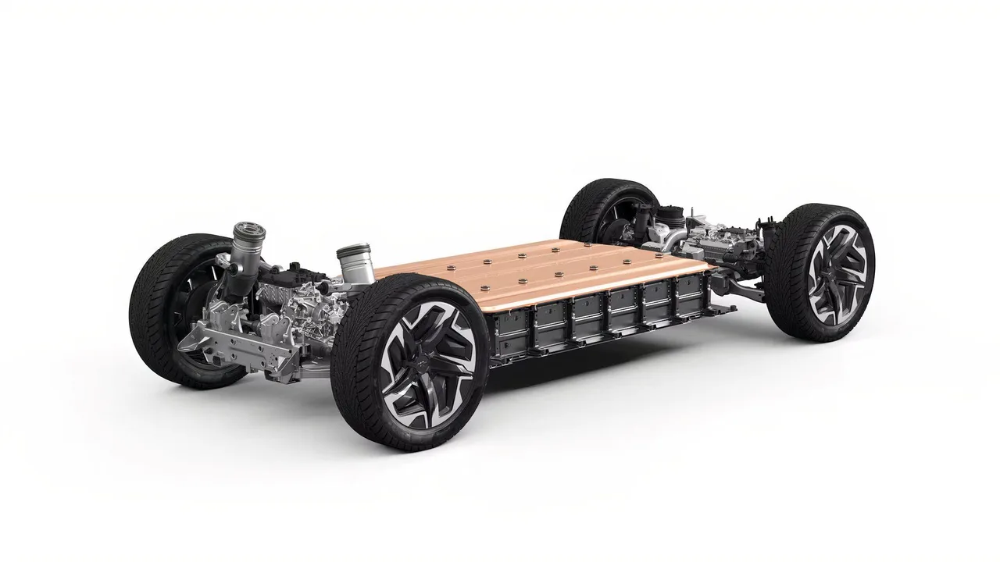
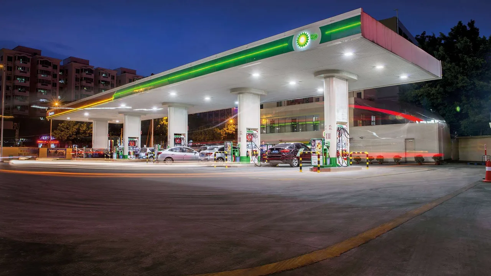
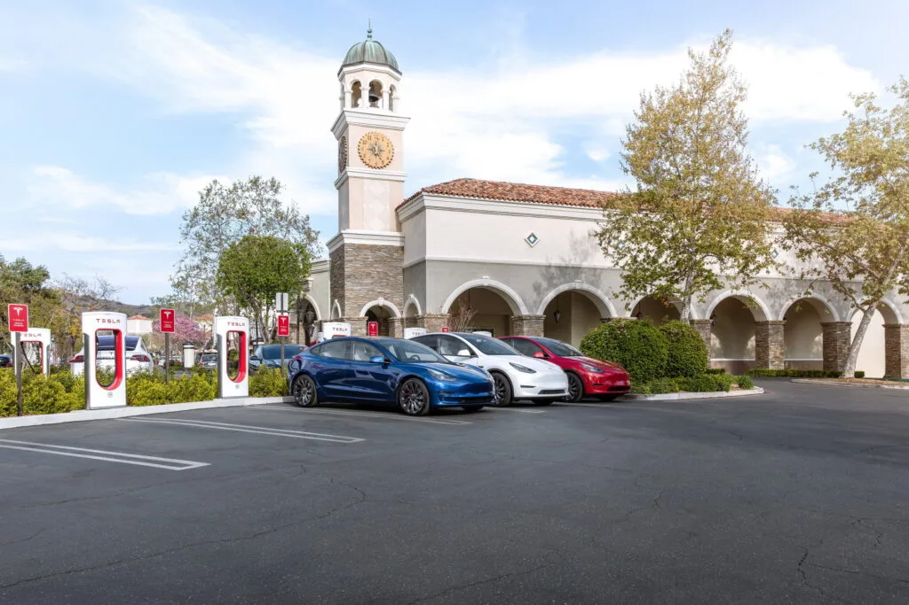

▲ 배터리 생산 단계의 배출까지 계산에 넣은 뒤에도 전기차의 우위는 유지됐다
전기차 반대 논리에서 가장 자주 쓰이는 문장이 있습니다. "오염을 배기구에서 굴뚝으로 옮겼을 뿐"이라는 말입니다.
MIT가 주도한 새 연구가 그 주장을 정면으로 다뤘습니다. 그리고 대체로 무너뜨렸습니다.
1. 무엇을 넣고 계산했나
이 연구가 주목받는 이유는 범위입니다. 보통 이 논쟁에서 빠지는 변수들을 함께 넣었습니다.
운전자가 어디에 사는지, 그 지역 전력망이 무엇으로 돌아가는지, 무슨 차를 타는지, 얼마나 달리는지, 심지어 날씨까지 포함했습니다.
| 범주 | 내용 |
|---|---|
| 제조 | 차량 생산 + 배터리 생산 |
| 에너지 | 연료 생산 + 전기 생산 |
| 지역 | 지역별 전력망 구성 |
| 환경 | 기온(계절 효율 변화) |
| 차량 | 차종 구분 |
| 사용 | 실제 주행 패턴 |
변수가 이만큼 많다는 점이 핵심입니다. 유리한 조건만 골라 만든 결과가 아니라는 뜻이기 때문입니다.
2. 결과는 40~60%
연구 결론은 전기차가 완벽하다는 것이 아닙니다. 배터리 전기차가 미국 전역에서 비슷한 급의 가솔린차보다 전 주기 배출에서 앞선다는 것입니다.
전기가 여전히 화석연료에서 많이 나오는 지역도 포함됩니다. 대부분의 지역에서 감축폭은 40~60%였습니다.

▲ 전력망 구성이 지역마다 다르다는 점까지 변수로 넣었다 ⓒ Carscoops
3. 왜 이런 결과가 나오나
이유는 의외로 단순합니다. 내연기관은 태우는 연료의 엄청난 양을 열로 낭비합니다.
전기차도 손실이 있습니다. 발전소에서, 그리고 송전 과정에서 에너지가 빠져나갑니다. 그러나 전기모터의 효율이 워낙 높아, 그 손실을 모두 계산에 넣고도 큰 우위가 남습니다.
📍 더러운 전력망이 하는 일
석탄 비중이 높은 전력망은 격차를 좁힙니다. 그러나 뒤집지는 못합니다.
이 구분이 중요합니다. "전력망이 더러우면 전기차가 더 나쁘다"는 주장과, "전력망이 더러우면 전기차의 이점이 줄어든다"는 사실은 전혀 다른 이야기입니다.

▲ 충전 전력이 어디서 오느냐가 격차의 크기를 정한다. 방향은 바꾸지 못한다 ⓒ Carscoops
4. 시간은 전기차 편입니다
연구가 짚은 또 하나의 지점이 있습니다. 가솔린차는 평생 같은 연료를 태웁니다. 10년 전에 산 차나 오늘 산 차나, 넣는 것은 같은 휘발유입니다.
반면 전력망은 계속 개선됩니다. 재생에너지 비중이 늘면, 이미 도로 위에 있는 전기차의 배출까지 소급해서 줄어듭니다. 차를 바꾸지 않아도 성적이 좋아지는 구조입니다.
| 구분 | 10년 뒤 |
|---|---|
| 가솔린차 | 동일한 연료 — 변화 없음 |
| 전기차 | 전력망 개선분만큼 배출 감소 |
5. 이 연구가 말하지 않은 것
정확히 읽는 것이 중요합니다. 이 연구는 미국의 전력망과 주행 조건을 기준으로 합니다.
국가마다 전력 구성이 다르므로 감축폭 40~60%라는 수치를 그대로 옮길 수는 없습니다. 다만 "내연기관이 연료의 상당 부분을 열로 버린다"는 물리적 전제는 어느 나라에서나 같습니다.

▲ 충전 인프라와 전력 구성은 나라마다 다르다. 결론의 방향은 같아도 폭은 달라진다 ⓒ Carscoops
6. 논쟁은 이제 어디로
이 연구로 전기차 논쟁이 끝나지는 않습니다. 배터리 원자재 채굴, 폐배터리 처리, 전력망 부하 같은 쟁점은 그대로 남아 있습니다.
다만 하나의 논리는 정리됐습니다. "배터리 만드는 데 드는 배출과 석탄 발전을 계산하면 전기차가 더 나쁘다"는 주장은, 그 두 가지를 실제로 계산에 넣은 연구 앞에서 근거를 잃었습니다.